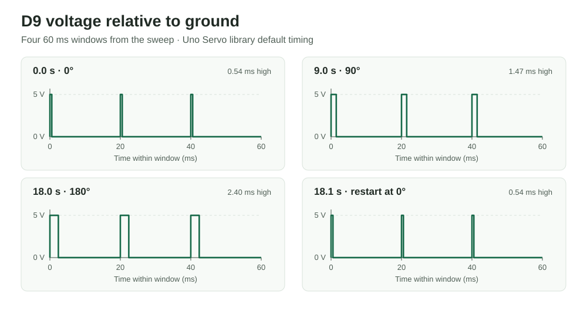

A metal fork acts as a touch sensor. Touching it turns on a green LED and moves a micro servo. Letting go reverses both outputs.
Project overview
Touch a fork. Move a servo.
The CapacitiveSensor library measures a change at the fork electrode, and the Servo library sends position commands to the SG90. The LED shows the same touch state as the servo.
01
Capacitive fork input on D4
02
Libraries · CapacitiveSensor and Servo
02
Outputs · SG90 on D12 and green LED on D9
01
Plan
Schematic & calculations
The input drawing shows D2 driving the resistor and D4 sensing the charge timing. The metal fork connects to the D4 side of the 1 MΩ resistor.The output drawing shows the servo signal on D12, its red lead on 5 V and brown lead on common ground. The green LED runs from D9 through 330 Ω to ground.
1 MΩ sensing resistor. D2 charges and discharges the fork electrode through the resistor while D4 measures how long the signal takes to switch. The time constant is τ = RC. With 1 MΩ, every additional 1 pF of capacitance adds 1 µs to the time constant. This makes small changes in capacitance easier to detect.
330 Ω LED resistor. Assuming a 5 V output and a green LED forward voltage of about 2.1 V, the estimated LED current is I = (5 V − 2.1 V) / 330 Ω ≈ 8.8 mA. The series resistor limits the current while keeping the LED visible.
02
Build
Physical circuit
The completed breadboard circuit. A wire connects the metal fork to the D4 sensing junction. The servo arm and green LED provide visible feedback.
D2–D4D2 → 1 MΩ → D4 junction → fork
D12SG90 signal lead
D9330 Ω → green LED anode
5 VSG90 red lead
GNDUno ground, SG90 brown lead, and green LED cathode
03
Test
Circuit operation
Touching the fork lights the green LED and moves the servo arm. Releasing the fork turns the LED off and returns the servo arm to its resting position.
The sketch commands 90° while the fork is touched and 0° when it is released. The 90° difference makes the motion visible in the recording. The LED follows the same decision as the servo.
Firmware
The sketch sums 30 sensing cycles per reading to reduce short-term variation. It compares the result to a threshold of 100 library counts. The threshold determines whether the outputs switch on and can be checked against untouched and touched readings in the Serial Monitor.
The 50 ms delay spaces successive decisions while keeping the response quick. Serial output runs at 9600 baud for inspection. The capacitance reading comes from digital pin timing through the library.
// Use the Arduino Servo library to generate control pulses for the SG90.
#include <Servo.h>
// Use the CapacitiveSensor library by Paul Badger and Paul Stoffregen.
#include <CapacitiveSensor.h>
// Create a controller for the SG90 servo.
Servo myServo;
// Drive D2 through the 1 MΩ resistor and read the fork at D4.
CapacitiveSensor touchSensor(2, 4);
// Send the servo control pulses from D12.
const int servoPin = 12;
// Switch the green LED on D9 through its 330 Ω series resistor.
const int ledPin = 9;
// Treat a reading above 100 library counts as a touch.
const long threshold = 100;
void setup() {
// Print sensor readings to the Serial Monitor at 9600 baud.
Serial.begin(9600);
// Set D9 as a digital output so it can switch the LED.
pinMode(ledPin, OUTPUT);
// Enable Servo library control of the signal wire on D12.
myServo.attach(servoPin);
}
void loop() {
// Sum 30 sensing cycles to obtain one capacitance reading.
const long sensorValue = touchSensor.capacitiveSensor(30);
// Print the reading so untouched and touched values can be compared.
Serial.println(sensorValue);
// Activate the outputs only when the reading exceeds the threshold.
if (sensorValue > threshold) {
// Command a quarter turn from the resting position.
myServo.write(90);
// Light the green LED while the fork is touched.
digitalWrite(ledPin, HIGH);
} else {
// Return the servo to the resting position when the fork is released.
myServo.write(0);
// Switch off the green LED.
digitalWrite(ledPin, LOW);
}
// Pause 50 ms before sampling again to space readings and serial output.
delay(50);
}
04
Questions
Additional questions
1. What does the servo signal on D9 look like?
For the circuit in this question, the Uno sends a pulse from approximately 0 V to 5 V about every 20 ms. The loop keeps each angle for about 100 ms, so there are roughly five pulses at each width before it increases by one step. With the default Servo library limits, the high time grows from about 0.544 ms at 0° to 2.400 ms at 180°, while the pulse height stays the same. The 181 angle commands take about 18.1 s, then the next pass starts at 0°.

Predicted D9 voltage relative to GND for the question’s sweep. Each panel zooms into a different 60 ms window. Pulse starts are aligned for comparison.
Default pulse limits ·
AVR angle-to-pulse mapping
2. How can we handle a bad reading 1% of the time?
Take three separate samples and use the median. If the signal stays roughly constant during the three samples, a single extreme bad value cannot pull the result outside the range of the other two.
function readWithOutlierRejection():
samples = []
repeat 3 times:
samples.append(readSensor())
wait 10 ms
sort samples in ascending order
return samples[1] // middle element, using zero-based indexing
3. How can we reduce random noise of ±10%?
Use a moving average of the 10 most recent readings. If the noise is independent and centered around the true value, positive and negative errors tend to cancel. The tradeoff is a slower response to sudden changes.
recent = empty queue
repeat every 10 ms:
recent.pushBack(readSensor())
if recent.size() > 10:
recent.popFront()
filteredValue = sum(recent) / recent.size()
use(filteredValue)
4. How did I use AI?
I used ChatGPT while planning the circuit, checking the sketch and troubleshooting the Arduino upload. I used it again to turn my own circuit drawings, photo, and video into this assignment page and to draft the waveform and filtering explanations.
Prompt: “应该怎么搭建这个电路” (“How should I build this circuit?”), followed by “做成这样” (“Make it like this”) with a reference image. Output: an initial infrared-remote design, followed by a capacitive-touch design using the CapacitiveSensor and Servo libraries after I shared the reference.
Prompt: “这个是代码 对吗” (“Is this code correct?”), with my sketch. Output: “两行 #include 缺了库名” (the two include lines were missing library names), with <Servo.h> and <CapacitiveSensor.h> as the corrections. When I shared the upload error, ChatGPT identified the old serial port and pointed me to the current one.
Prompt: “你帮我画出来 不是这个示意图” (“Draw it for me”). Output: a draft circuit diagram for the earlier spoon design. The two schematic images on this page are my drawings of the final fork circuit.
Prompt: “帮我根据作业要求，写代码，跟以前一样，写网站” (“Write the code and website following the assignment and my earlier pages”), with my build media and schematic photos. Output: this page, the linked Arduino sketch, the GIF converted from my video, and the D9 waveform figure.
The upload check helped me separate a working compile from a serial connection problem. I used my own hand-drawn schematic and demo as the record of the build, including the fork and the resistor values I used.